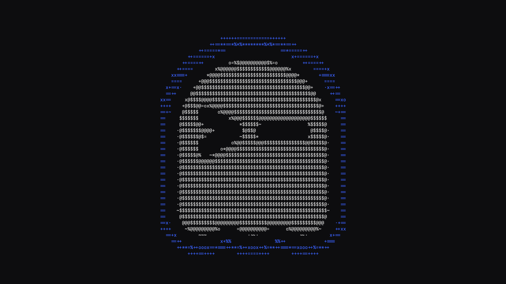
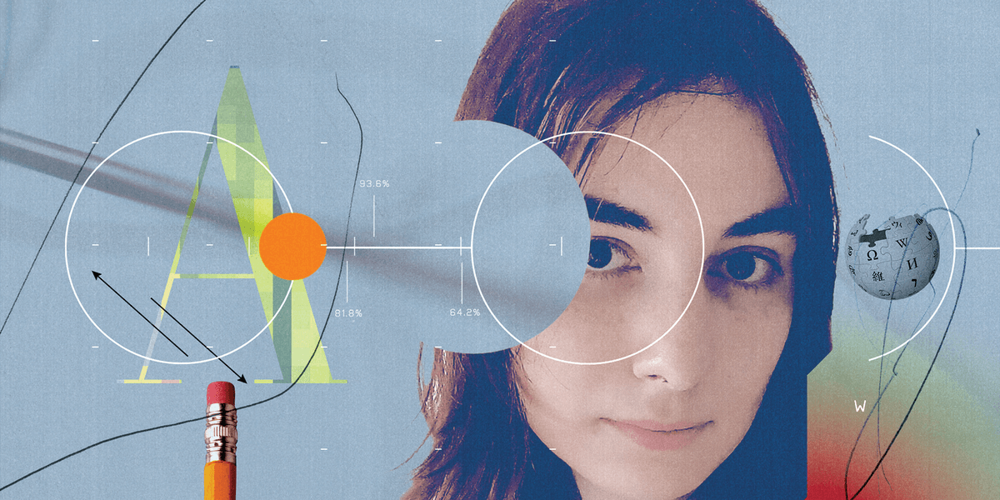
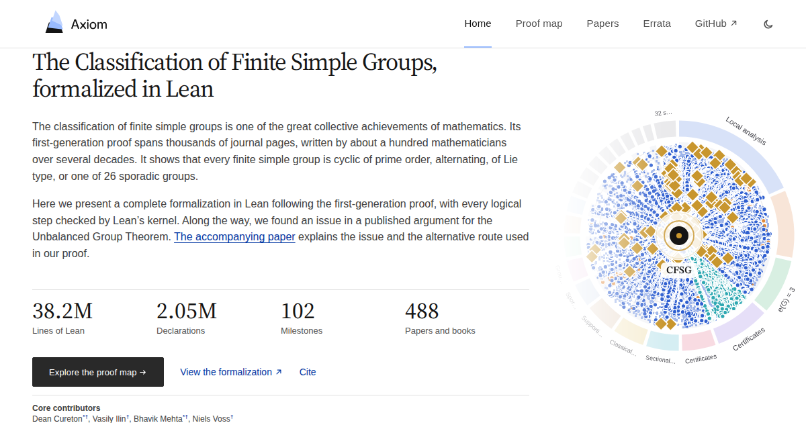

The front page, read closely and set in type — a briefing for Keegan
Compiled from news.ycombinator.comTuesday, October 27, 2026Every fact checked; every joke earned
Lead BulletinGenie 4 announcedDeepMind’s world model now generates sound and speech along with the scenery — readers query the physics.
Language DeskPython JIT delistedExperimental compiler to be removed after PEP 836 withdrawn; a standards-track PEP was the price of admission.
ShippingGhostty 1.4.0Seven months, 172 contributors, one complete Kitty graphics implementation, three security advisories.
MachineryM6 everywhereApple refreshes iMac and MacBook Pro in a same-day blitz; the chin survives another generation.
Lead Story · Artificial Intelligence
Genie 4: DeepMind’s World Simulator Learns to Talk Back
The new model generates music, ambient noise and dialogue simultaneously with its worlds — whether the marble obeys gravity remains contested
From the AI Desk★ 495 pts · 296 comments
A still from DeepMind’s Genie 4 announcement material. Google DeepMind
MOUNTAIN VIEW — Google DeepMind on Tuesday unveiled Genie 4, its newest “world model” for real-time interactive simulation — and the day’s most-upvoted story withal. The headline upgrade: the model is natively multimodal — music, ambient noise and interactive dialogue are generated simultaneously with the world, not layered on afterward.[1]
Genie 4 leans on the Gemini family: Gemini Omni anchors the simulations in real-world appearance and behavior, while other Gemini models supply “the complex reasoning needed to help maintain a simulation’s coherence and continuity.”[1]
The gallery demos are striking — a stained-glass landscape, a porcelain-menagerie wizard’s room — but the commentariat was unpersuaded. Complaints centered on apparent weak player control relative to Genie 3; a marble bust that, per one frame-by-frame auditor, should have toppled off a watermelon but didn’t; and a marquee “do you really think we’re going to make it?” moment whose expression was “totally out of sync with the scene.” One verdict summed up the room: “It still looks like a video game rendering.” From Google, that may or may not be an insult.[2]
» Continued in the comments, all 296 of them
Developer Tools
Ghostty 1.4.0 Ships With a Mea Culpa
Tools Desk★ 421 · 130 cmts

Ghostty’s 1.4.0 release card. ghostty.org
The terminal emulator dropped a major release capping seven months of work from 172 contributors over 2,889 commits. Highlights: “large performance and memory improvements,” a 100%-complete Kitty graphics implementation including animation and relative placements — the first non-Kitty terminal to get there — and SSH integration upgrades.[3]
The notes also disclose three security advisories, most notably a paste-protection bug in which a carriage return could sneak a command past confirmation, and malicious Kitty graphics escapes that could read or delete files outside allowed directories. The notes are “hand-crafted” and take “a combined 16+ hours to write,” a fact the maintainers would like you to appreciate — and, having read them, you may.
The JIT compiler merged into CPython 3.13 is headed for deletion after maintainers withdrew PEP 836 (“JIT Go Brrr”) rather than meet the steering council’s bar for a supported feature. The council had demanded a standards-track PEP with maintenance commitments, success metrics, and a compatibility review far earlier than the proposed August 2028 date.[4]
Co-author Savannah Ostrowski — also release manager for Python 3.16/3.17 — cited lack of “personal bandwidth”; Brett Cannon noted a replacement PEP is unlikely, since “all the people actively driving the JIT” were on this one. Removal is expected early in the 3.16 cycle, the reference implementation parked off-tree for whoever wants it.[4]
“I have no plans to check this in. … I know we aren’t crazy about experiments in main.”
— Brandt Bucher, Nov. 2023[5]
Editor’s note: The Herald reviewed the 2023 sprint talk embedded in LWN’s coverage and found Bucher told the room he had “no plans to check this in,” months before doing exactly that — floating the merge as a trial balloon while naming the very process concern (“experiments in main”) that unwound the project in 2026. In the phrase “experimental JIT,” it turns out, the load-bearing word was “experimental.”[5]
The Picture Show — Staff Screening47:50
Internet Culture
Wikipedia’s Editors vs. the Machine Flood
Culture Desk★ 382 · 173 cmts

Spectrum’s illustration for the WikiProject AI Cleanup feature. IEEE Spectrum
IEEE Spectrum goes inside WikiProject AI Cleanup, the volunteer effort keeping the encyclopedia human-written since editors first spotted “very strange articles with the same odd characteristics” around December 2023.[6] The piece landed hard on the forum, where debate split between “AI will eventually write encyclopedic content” and veterans invoking the low-background steel problem — content uncontaminated by AI, like pre-nuclear steel for radiation instruments.[7]
One editor’s lament about the AIDS article — once “a very informative (and satisfying) 20-minute read,” now “pages and pages of probably-factual text” — did more argumentative work than any policy essay.[7]
Hardware Desk
Apple’s M6 Blitz: iMac and MacBook Pro Refreshed in One Day
Hardware Desk★ 244+170 · 480 cmts
The iMac: seven colors, one chin. Apple
CUPERTINO — Apple rolled out its M6 silicon across the consumer line in a coordinated Tuesday assault. The 14-inch MacBook Pro gets a 12-core CPU (“the world’s fastest CPU core,” per Apple’s footnotes), a GPU claimed 30% faster in graphics and 25% faster in AI than M5 — or up to 13× the AI throughput if fleeing an M1 — plus a Dual 16-core Neural Engine, Wi-Fi 7, Bluetooth 6, and the ritual “up to 24 hours” of battery.[8]
The iMac keeps its seven-color wardrobe, 24-inch 4.5K display, up to 32 GB unified memory, and — yes — the chin, now up to 18× faster than “the most popular Intel-based iMac.”[9]
The 14-inch MacBook Pro with M6. Apple
The comment sections were less about silicon than grievances: the iMac’s 60 Hz panel (“24″ and 60Hz…” — ellipsis of despair), the immortal chin, and disbelief that the Magic Mouse still appears in promo photos, charging port downward, as God intended.[10]
Mathematics Desk
Enormous Theorem, Enormous Flex: Finite Simple Groups Formalized in Lean
Science Desk★ 108 · 25 cmts

The CFSG-in-Lean project site. axiommath.ai
The Classification of Finite Simple Groups — roughly 100 mathematicians, several decades, thousands of journal pages — has been completely formalized in Lean, every logical step checked by the kernel.[11]
The kicker: along the way the team (Cureton, Ilin, Mehta, Voss, et al.) found counterexamples to a closure assertion in a published route to the Unbalanced Group Theorem — a genuine erratum in the literature, patched via Solomon’s 1976 theory of maximal 2-components. A formal errata list is being compiled with working group theorists. The machines checked the humans’ homework, and found a smudge.
The Proof, by Weight
Lines of Lean
43,100,000
Declarations
2,050,000
Papers & books distilled
715
Milestones
100
Errata found in literature
≥1
Security Briefing
Tailscale Races to Patch Privilege Escalation in Tailscale SSH
Security Desk★ 46 · 8 cmts
Tailscale disclosed that its SSH feature harbors privilege-escalation issues: users already authorized to connect may act “beyond the permissions of their configured local user, including potentially gaining elevated privileges.” Exploitation depends on configuration; the company is not recommending everyone disable Tailscale SSH, and targeted a patched client by end of day Tuesday. Interim guidance: audit SSH access policies and set TS_SSH_DISABLE_FORWARDING=1 if forwarding isn’t needed.[12]
Also on the Security Desk: Three TLS Bugs in GoAhead
GoAhead — an embedded web server in hundreds of millions of devices (routers, printers, gateways, industrial controls) — shipped three independent TLS flaws: revoked client certificates silently accepted despite a configured CRL (CVSS 9.1); a LibreSSL verifier chain-depth bypass (7.4); and an Mbed TLS buffer-length typo that shrinks a 2048-bit DH modulus to one byte, making TLS 1.2 sessions decryptable (5.9). Fix: upgrade to 6.1.1 — or wait approximately forever for the router firmware update.[13]
The severity ledger. Bars to scale, 0–10. The Hacker Herald
Practical Tech Corner
Survival LLM: A Bug-Out Bag for the Model Weights
Field Desk★ 32 · 11 cmts
An offline assistant for when the internet is the casualty. brangus.io
A free, open-source emergency assistant that runs entirely offline: the model and a 9 GB library (FEMA and CDC guidance, medical references, repair manuals, ~930,000 Wikipedia articles) live on your machine, and every answer cites the exact passage it came from.[14]
It picks a model to fit your RAM — from Nemotron 3.5 Super (80 GB download, 128 GB+ Macs) down to IBM Granite 8B (6 GB) — scoring 21/22 vs. 14/22 on a blind-graded 22-question blackout-and-first-aid test. Setup takes “20 minutes to about 2½ hours,” which the manual suggests doing before the emergency, not during it.[14]
“Smaller models make more mistakes, so the app always shows the source to check.”— The project’s honest footnote
Quote of the Day
“It seems like the plan should be [to merge it to] main. Am I right?” … “That’s how I feel as well.”
— Core developer Q&A, CPython sprint, 2023[5]
Two years and one withdrawn PEP later, the plan to main is now the plan out of main — see Language Affairs, this edition.
Classifieds — Rates: 1 Karma per line
LOST: One (1) experimental JIT compiler, last seen in CPython main. Answers to “JIT Go Brrr.” Reward: custody of a 43M-line fork.
FOUND: Erratum in the finite simple groups literature. Owner may claim at axiommath.ai; proof of identity required (Lean kernel accepted).
WANTED: 60 Hz panel, one each, for a desktop computer in 2026. Serious inquiries: Cupertino.
FOR SALE: Marble bust, barely toppled. Physics not included.
The Box Score — Front Page by the Points
The Day in One Line
Google simulates worlds, Lean checks a 10,000-page proof, Python deletes a compiler, Apple sells the same chin — and the iMac’s comment section outdraws everything but Genie 4.
Front Page Ledger
Stories surveyed
10
Aggregate points
2,307
Aggregate comments
1,324
Most-discussed
iMac M6 (296)
Best points-per-comment
Genie 4
Security stories
4 of 10
Chins retained
1
Corrections & Clarifications
Correction: In earlier editions, the Magic Mouse was described as “ergonomic.” The Herald regrets the characterization and has downgraded it to “photogenic from certain angles.”
Correction: An earlier edition implied the marble bust in the Genie 4 demonstration would topple. The model disagrees; physics has been asked for comment.
Clarification: In the phrase “experimental JIT compiler,” the word “experimental” was, in retrospect, the most load-bearing word in the sentence.
Correction: The iMac’s 24-inch 4.5K display was described by some observers as “ready for ProMotion.” It is 60 Hz. The Herald will update this correction annually.
From the Publisher’s Desk
This paper has a circulation of one, which keeps the editorial standard simple: every story below earned its place by being worth Keegan’s time — checked against the source, quoted from the record, and cut where it dragged. The front page chose the news; the Herald only chose what to keep. Complaints about the editorial line may be addressed to the publisher, who is also the reader, and will certainly see it your way.
— The Herald
Wire Services & Citations
Google DeepMind, “Genie 4: A new generation of world simulation,” deepmind.google, Oct. 27, 2026.
J. Brockmeier, “Python’s experimental JIT to be removed,” LWN.net, Oct. 26, 2026, lwn.net. Hacker News: id=50257419.
B. Bucher, “A JIT Compiler for CPython,” talk at the 2023 CPython Core Developer Sprint, uploaded by encukou, Nov. 15, 2023, youtube.com/watch?v=HxSHIpEQRjs. Quotes drawn from best-effort auto-captions; ellipses ours.
foxio, “Choose Your Backend: Three TLS Bugs in GoAhead,” foxio.io, Oct. 2026. Hacker News: id=50263701.
“Survival LLM: AI assistant and emergency library that runs on your own computer,” brangus.io. Hacker News: id=50264853.
Methodology: Compiled from the Hacker News front page at approximately 20:40 UTC on Oct. 27, 2026; points and comment counts are snapshots of a moving target and will have changed by the time you check. Story texts are summarized from the linked primary sources; reader quotations paraphrase or quote the linked HN threads. The Bucher quotes come from the uploader’s best-effort auto-captions of the 2023 sprint talk. Image credits appear beneath each photograph; charts are the Herald’s own. Corrections, like the news above, are non-fiction.